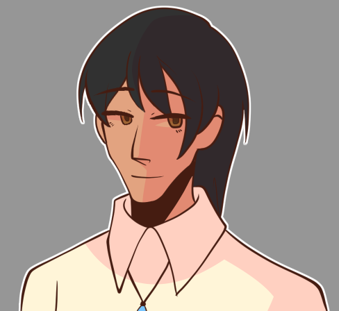

1866
Foundation of Santa Marta, Rio Negro
1889
Death of Gaspar Castro
1889
Gaspar joins the Gentry
1816
Argentine Independence
2000+
Present
1978
Naomi Castro is born
1107
Maeve Is born as part of the Gentry
2000
Naomi works in Gaspar Manor as an assistant
2000
Naomi tries to live her normal life in Santa Marta
2000
Naomi disturbs Gaspar's domain and is forced into a Deal
Gentry Era
80000 BCE to ...
The first humans of exceptional wisdom and power began to appear in Faery. These early gentry were revered for their insight and knowledge, and their arrival shaped the structure and customs of the Otherworld.
They coexist with the animalistic and other intelligent Fae.
Animalistic Era
300000 BCE to 100000 BCE
The first Fae creatures that started appearing, mainly mirroring Earthly creatures, and moved purely by instinct.
Faery
Human
Timelines
Deal
In Faery society, Deals (sometimes called Debts) are binding agreements made between mortals and the Fae. These contracts usually arise when a human damages Faery property, insults a Fae, or voluntarily seeks Fae aid. The bargain is always transactional: the Fae demand service, action, or knowledge in return for balance.
Humans who enter a deal pledge their soul as collateral, ensuring the Fae’s terms cannot be refused without consequence. Unlike a Geis, a deal does not leave a visible mark, but its weight binds the debtor until the service is fully repaid.
Common Features of Deals:
- Always transactional: service or action is exchanged for balance.
- Collateral is the debtor’s soul or essence.
- Duration varies; some debts last days, others may endure for a lifetime.
- Breaking the bargain strengthens the Fae’s claim over the human.
Intelligence Era
100000 BCE to 80000 BCE
Intelligent Fae creatures started appearing, varying in size. While capable of feeling emotions and understanding language in later years, they don't have a human nature.
They coexist with the animalistic Fae
Mit is born
Races
Places
Races
Santa Marta, Rio Negro
Santa Marta is a small coastal town located in Río Negro, Argentina, notable for its unique geography of dense forests adjoining a sandy beach. The town serves as the birthplace and home of Naomi Castro and her family, and it is one of the known crossing points into Faery due to the presence of Gaspar’s domain.
Overview
Founded in 1866 by European settlers and local families, Santa Marta has remained relatively isolated, preserving both natural landscapes and long-standing traditions. The town is surrounded by thick pine and native Patagonian forests, which stretch directly toward the Atlantic coastline.
The dual landscape of forest and shore has fueled local folklore and superstitions for generations. Stories of strange lights, inexplicable winds, and sudden disappearances are common, often linked by locals to “las hadas” and other folkloric creatures.
History
- 1866 – Foundation: Santa Marta was established as a small fishing and logging community. Families of Spanish, Italian, and criollo descent built homes along the coast and cleared sections of the forest.
- Late 1800s: Oral histories describe unusual events following the town’s founding, including unexplained illnesses, accidents near thorn groves, and tales of a “green man” said to wander the woods. This period coincides with the death of Gaspar, who later reappears in Faery as part of the Gentry.
- 20th Century: While modern infrastructure reached Santa Marta, it has remained small and largely dependent on fishing, tourism, and small-scale farming. The woods and beach continue to be considered liminal spaces by locals, and warnings against cutting certain trees or disturbing mushrooms persist.
Connection to Faery
Santa Marta is a significant location within the narrative due to its connection to Gaspar’s domain. The Castro family has lived in the town for generations, unknowingly residing close to active fairy sites.
- Gaspar’s Domain: Located in the deeper forest beyond the main town, tied to roots, thorns, and mushroom circles.
- Crossing Points: Liminal areas such as the beach at night, storm winds, and mushroom clusters act as weak spots between Earth and Faery.
- Local Lore: Families often tell children not to wander at dusk or whistle near the forest edge, traditions rooted in faint memories of Faery contact.
Notable Residents
- Naomi Castro: Protagonist of the series, resident of Santa Marta and current debtor to Gaspar.
- Gaspar: Formerly a wealthy man that contributed to the foundation of the town. After death he becomes part of the Gentry of Faery whose domain overlaps with Santa Marta’s woods. His death in the late 1800s corresponds with the town’s early history.
- Castro Family: Generational inhabitants of Santa Marta, with roots dating back to its founding.
- Maria:
- Lucas:
Fae
The Fae are an umbrella term for beings of Fae nature, native to or dwelling within the inner physical plane of Earth, known to humans as Faery
They are long-lived or immortal beings with a natural affinity for magic, perception, and manipulation of their environment.
Fae vary widely in form, temperament, and power, ranging from diminutive, elusive tricksters to towering, noble entities. Many are bound to natural or mystical features such as forests, rivers, or stone circles, and they often interact with the human world in secretive or enigmatic ways.
Habilities
Longevity or Immortality
Most fae live far longer than humans, and some are effectively immortal. Lifespan varies depending on type and origin.
Deals
Fae frequently make bargains with humans or other fae. Compensation is usually labor, services, or information, with the soul sometimes serving as collateral if terms are broken.
Glamour Magic
Many fae can weave glamour, altering human perception of themselves, their surroundings, or objects. This can include appearing more beautiful, hiding hazards, or creating entire illusory landscapes.
Cursing and Blessing
Fae can place curses or bestow blessings, often following the rules of the bargain or geasa. These effects can be subtle or extreme and may manifest physically, mentally, or socially.
Travel Between Worlds
Most fae can move between the mortal realm and Faery, often through natural thresholds, liminal times, or hidden portals. Travel can be restricted by geography, time, or magical barriers.
Shapeshifting and Manifestation
Some fae can assume alternative forms, usually humanoid, animal, or semi-animal. Others can manifest objects, lights, or natural phenomena to influence or test humans.
Perception and Senses
Fae often perceive truths invisible to humans, including intentions, bargains, or magical presence. They can sense emotional states, spiritual energy, or disturbances in the natural order.
Influence of Nature
Many fae have a connection to natural forces, enabling them to manipulate plants, weather, water, or animals within their domain, often as a reflection of their mood or whims.
Humans
The human race is an intelligent life form native to Earth's outer physical plane.
They are a highly adaptable species, capable of surviving in a wide range of environments. Humans possess no inherent magical traits, relying instead on ingenuity, collaboration, and technological or cultural advancement.
Humans are known for their curiosity, resilience, and restlessness, often pushing beyond their limits in search of knowledge, power, or exploration. Though not the strongest or the most gifted species, their adaptability makes them one of the most influential and widespread peoples of their world.
Geis
A Geis (Plural form: Gaesa) is a pact formed between a Fae and a human, in exchange for hidden knowledge orthe ownership of physical objects from Faery
It shows itself as a tattoo over the heart of the human who makes the pact. Unlike ordinary bargains, a Geis imposes specific conditions that, if broken, can result in harm or death. Geasa often leave a visible or magical mark on the person bound, serving as a permanent reminder of the agreement and its restrictions.
These pacts are frequently used to protect secrets, enforce loyalty, or ensure compliance with the fae’s instructions. The knowledge or promises obtained through a Geis are considered sacred; revealing or boasting about them is dangerous and can trigger the pact’s consequences. Geasa are highly individualized, reflecting the will and nature of the fae who impose them. They are not easily removed or broken, and the terms are usually clear only to those who enter into them.
Effect
Physical Marking
The mark may appear on the skin, sometimes glowing, shifting, or forming symbolic shapes related to the terms of the pact. The location and appearance often reflect the nature of the obligation.
Enforced Compliance
Violating the conditions of a Geis can result in immediate physical or magical repercussions, ranging from pain, illness, to death in extreme cases.
Psychological Influence
Some Geasa impose compulsions, enhancing the subject’s focus on fulfilling the terms or deterring disclosure of forbidden information. However, this compulsion can be bypassed, which usually leads to baneful effects of the Geis.
Manifestation
The pact is manifested physically by a small flower tattoo that appears on the chest of the human, over their heart.
Magic
Outer Physical Plane
The Outer Physical Plane of Earth is the material world inhabited primarily by the Human race and other non-magical beings. It is the visible, tangible layer of the planet, encompassing continents, oceans, skies, and all ecosystems familiar to mortals.
While magic exists in traces here, it is not inherent to most native species. The Outer Plane is defined by its physical laws and predictable cycles, from the rising and setting of the sun to the changing of seasons. Though connected to the inner plane known as Faery, this layer is largely imperceptible to Fae unless they choose to reveal themselves.
Humans are the dominant intelligent species here, shaping the world through culture, technology, and adaptation, yet the Outer Plane remains wild in many regions, hinting at the mysteries and powers that lie just beyond mortal perception.
Inner Physical Plane (Faery)
The Inner Physical Plane, Also Known as Faery, is the hidden land native to the Fae and its subspecies. Is Geographically is identical to the outer plane.
Argentina
Maria

Lucas

Earth
Earth is a terrestrial planet located in the Milky Way galaxy. It is the home of the human race and other mortal creatures, featuring diverse landscapes including oceans, mountains, forests, deserts, and polar regions.
The planet is composed of two physical planes that overlap; the two don't interact physically. However, species of both planes can cross to one plane to the other.
Maeve

Argentina
Naomi

Debt and Deal
Mit

Gaspar

Kelpies
Selkies
Leprechauns
Brownnies
Boggart
Will-o'-the-wisp/Luz Mala
Cat-sith
Primitive Each-uisce
Gentry
The Gentry are a species of the Fae, distinguished by their inherently human nature. They may be born in Faery or reincarnated there after death.
They possess innate magical abilities and a strong connection to the Otherworld, though their personalities and intentions toward humans vary widely—from curious and playful to distant or mischievous.
Physical Appearance
The Gentry are indistinguishable from humans in their prime; a key distinguishing feature of the Gentry is their pointed ears, setting them apart from mortals and many other Fae.
On their native plane, they appear with natural human coloring, but when seen by humans on the Outer physical plane, they manifest a faint green glow, pale skin, and an overall greenish hue.
Habilities
Inmortality
Like many members of the Fae, Gentry enjoy eternal life once they reach adulthood. Their appearance depends on each individual and whether the Gentry is a reincarnated human, appearing as a young adult or middle-aged person.
Deals
Like many members of the Fae, the Gentry is capable of making deals with humans or other Fae. These deals are usually paid for with physical or intellectual labor, with the soul of the other party serving as collateral in case the deal cannot be repaid.
Geasa
See Geis
In exchange for hidden knowledge, the Gentry can mark the human with a mark on the chest, this mark can cause pain or death to the human if they reveal knowledge given by a member of the gentry to other humans.
Glamour
With Glamour Magic, they can change the perception that humans have of them and/or their domains.
Pixies
Pixies are a species of the Fae, characterized by their small stature, quick movements, and inherently playful, though sometimes troublesome, nature. They are among the earliest intelligent fae to appear, embodying both curiosity and mischief.
They originated from the Intelligence era of Faery
They possess minor magical abilities, often tied to illusion, glamours, and influencing emotions, and are strongly associated with liminal spaces such as hedgerows, crossroads, and forest edges. Their behavior toward humans ranges from friendly and helpful to mischievous, depending on how they are treated.
Physical Appearance
Pixies stand between 60–80 cm tall, with an androgynous build. Their skin and eyes are a vivid green, and their hair is always short, white, and cut close to the head in a style reminiscent of the “pixie cut.”
Their ears are sharply pointed, and their features carry a lively, mischievous gleam.
Civilization and Culture
Naming Traditions
Pixies always have monosyllabic names.
Gender Ideals
Unlike many fae, Pixies have no sense of sexuality, gender, modesty, or dress codes.
Common Dress Code
Offering or forcing clothing upon them is considered a grave insult—one of the quickest ways to make an enemy of a Pixie.